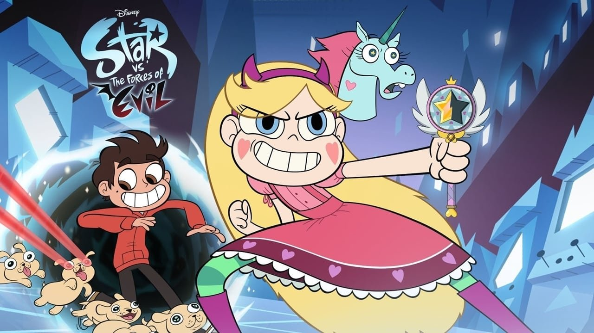

Стар против сил зла
«Звёздная принцесса и силы зла» (также известно как «Стар против Сил Зла»; англ. Star vs. the Forces of Evil) — американский анимационный мультсериал, созданный студией «Disney Television Animation». Премьера мультсериала состоялась 18 января 2015 года на Канале Disney и 30 марта 2015 года на Disney XD. На российском канале Disney премьера состоялась 5 сентября 2016 года. После выхода первой серии первого сезона, сериал сразу же был продлён на второй сезон. 4 марта 2016 года сериал был продлён на третий сезон, а 28 февраля 2017 года он был продлён на четвёртый сезон, который завершил историю главных героев.
Сюжет
История рассказывает о Волшебной Принцессе — девочке-подростке по имени Звёздочка Баттерфлай (англ. Star Butterfly), жившей (примерно, в нашем времени) в ином от Земли измерении под названием Мьюни (англ. Mewni). По наследству она получила Волшебную Палочку от своей матери, но после того, как Звёздочка чуть было не разрушила свой родной город Магией, её родители (королева и король) отправили свою дочь в другое Измерение — на планету Земля. Ради безопасности королевства Мьюни и обучения юной принцессы, родители позволили ей жить и творить на планете Земля. В Земном измерении родители Звёздочки (Мун и Ривер) за большие деньги определили её на обучение в американскую старшую школу «Академия Эхо-Крик», где принцесса Звёздочка знакомится с мальчиком из семьи Диаз — Марко, а позже — и с его родителями. Все одноклассники и друзья считают Марко «Тихоней». Однако Марко утверждает, что это не так.
Вначале Марко и Звёздочка не находят общего языка, конфликтуя по причине появившегося беспорядка в доме Марко (куда поселили «ученицу по обмену» — Звёздочку) и повышенной активности Звёздочки, но затем Марко понимает, что именно с этой девочкой его ждут необыкновенные приключения.
Персонажи
Первостепенные персонажи
Положительные
- Звёздочка Баттерфляй (англ. Star Butterfly, в других переводах Стар Баттерфляй) — главная героиня мультсериала. Принцесса-подросток из альтернативного пространственного измерения под названием Мьюни, отправленная на Землю в качестве «мягкого» наказания за неаккуратное использование Волшебной Палочки и живущая на Земле, в семье Диаз в рамках обучения по обмену. Со временем она становится более собранной и серьёзной, а после массы приключений возвращается обратно — на Мьюни. После событий, произошедших в 3-м сезоне, Звёздочка узнаёт, что Волшебная Палочка по праву принадлежит не ей, а изгнанной и заточённой в кристалл Эклипсе, королеве Мьюни, несправедливо отстранённой от трона, и отдаёт палочку Эклипсе. В 4-м сезоне Звёздочка научилась управлять магией и без Волшебной Палочки. В конце 4-го сезона она уничтожает магию в дорогом ей «пространстве и измерении» «Мьюни-Земля».
- Марко Убалдо Диаз(англ. Marco Ubaldo Diaz) — второй главный герой мультсериала. Подросток, ученик школы «Академия Эхо-Крик», лучший друг принцессы Звёздочки на Земле и в других мирах (впоследствии её «личный оруженосец», назначенный принцессой). Помогает Звёздочке освоиться на Земле и сражаться с «монстрами», а также принимает её как «ученика по обмену». Хоть Марко и утверждает, что он «плохой парень», у него доброе сердце и острый ум, и он готов всегда защищать Звёздочку. Марко занимается карате (имеет зелёный, а позже — красный пояс), что помогает ему в борьбе с монстрами. После шестнадцати лет погони за Хекапу Марко получает от неё собственные межпространственные ножницы (время в собственном измерении Хекапу течёт иначе). В битве с монстром Метеорой за королевство Мьюни он возглавил маленький отряд бойцов под названием «Марколепная семёрка», состоявший из самых отчаянных и сильных воинов — его друзей. Как и многие из этой команды, в битве он «погиб», но впоследствии был спасён магией принцессы Звёздочки. В последней серии 4-го сезона стал последним обладателем Королевской Волшебной Палочки, но после уничтожения магии палочка исчезла.
- Томас Дракониус Люцитор — трёхглазый полудемон, принц Преисподней из подземного мира. До некоторого времени строил личные отношения с принцессой Звёздочкой. Его мать является демоном, а отец — человеком. Том имеет очень вспыльчивый характер. Всячески пытался наладить отношения со Звёздочкой до 2-го сезона. С 3-го сезона Том стал другом Марко (более того, принял личное участие под командованием Марко в смертельной битве за Мьюни), но до этого времени всегда пытался обойти его стороной (в некоторых случаях уничтожить). Участвовал в Битве за Мьюни, где всеми своими демоническими силами пытался помочь победить общего врага — Метеору.
- Голова Пони (Лайлация Пониголовая)(англ. Flying Princess Lilacia Pony Head) — летающая голова единорога из измерения Мьюни, чьё королевство находится прямо над замком Баттерфляев (принцесса, как и Звёздочка). Пониголовая любит соперничать; груба, но верна своим друзьям и может пожертвовать собой ради их блага. Лучшая подруга Звёздочки во всех измерениях и мирах. Поначалу, она холодно относится к Марко, но позже пытается построить с ним дружественные отношения. Имеет двенадцать родных сестёр, плетущих против неё интриги. Под командованием Марко она принимает участие в Битве за Мьюни, где «гибнет» на некоторое время.
- Жанна Ордония (англ. Janna Ordonia) — ученица школы «Академия Эхо-Крик»; неформалка, ценительница магии, волшебства, разных жутких вещей и гипноза; любит подшучивать над Марко и воровать у него личные вещи и персональные данные.
- Глоссарик Терминов (англ. Sir Glossaryck of Terms) — маленькое синее шестипалое летающее существо, хранитель священной королевской «Книги Заклинаний». Был создан Вселенной. Создал всю Высшую Магическую Комиссию. Обожает пудинг. При помощи пудинга спас память Стар и Марко в Краю Магии. Является учителем по заклинаниям, что записаны в Книгу Заклинаний, учит только владельцев «Книги», которыми веками являются принцессы Баттерфляй, получившие Книгу в наследство, как и волшебную палочку. Однако если кто-то другой станет обладателем палочки и Книги Заклинаний, то Глоссарик будет обязан обучать и его. Глоссарик исчез после уничтожения магии в финале сериала вместе со всей Высшей Магической Комиссией.
- Королева Баттерфляй (Луна Баттерфляй) (англ. Queen Butterfly (Moon Butterfly), в других переводах Мун Баттерфляй) — мать Звёздочки и правительница Мьюни. Ранее владела Королевской Волшебной Палочкой, которую передала дочери на её четырнадцатилетие, как предписывали традиции. Лишилась своей матери в возрасте Звёздочки. В 3-м сезоне после битвы с монстром Метеорой (дочерью Эклипсы — одной из королев Мьюни) исчезает на некоторое время из Королевства и попадает в Край Магии. Позднее Звёздочка нашла её, после чего Луна начала свою новую борьбу с Эклипсой за трон Мьюни.
- Эклипса Баттерфлай (англ. Eclipsa Butterfly) — королева Мьюни, прозванная Королевой Тьмы. Изучала тёмную магию, была обвинена в предательстве своего народа за то, что сбежала с любимым монстром, от которого родила дочь, после чего была заточена в кристалл на срок в более чем 300 лет. Создала собственную главу в Книге Заклинаний, которая вскоре была названа «запретной». Около двадцати лет назад юная принцесса Луна (мать Звёздочки), внезапно став королевой Мьюни (после смерти своей матери), обратилась к Эклипсе за тёмным заклинанием, позволяющим «убить бессмертное существо», чтобы уничтожить злодея Тоффи, погубившего её мать. Две королевы заключили между собой договор, согласно которому, когда Тоффи будет убит, Эклипса станет свободна. С тех пор прошло много лет, пока Звёздочка и Людо не убили Тоффи, после чего Эклипса освободилась из заточения. В конце 3-го сезона, спасая Мьюни, Эклипса «уничтожает» свою дочь-полумонстра Метеору, которую, как оказалось, она просто превратила в младенца. В начале 4-го сезона принцесса Звёздочка, ещё не нашедшая свою маму, отдала всю власть и волшебную палочку Эклипсе, которая является настоящей королевой. Получив палочку в свои руки, Эклипса создаёт новый город на месте горы Храма Монстров — Монстертаун, заселённый монстрами, запрещает дискриминацию монстров и запускает работу по извлечению своего мужа из волшебного кристалла. Замок Баттерфляев при этом остаётся заброшенным.
- Король Баттерфляй (Ривер Баттерфляй) (англ. King Butterfly (River Butterfly)) — отец Звёздочки и король-консорт Мьюни; сам он из династии Йоханссенов. Тайно ходит сражаться с «монстрами», обманывая жену — королеву Луну — тем, что он якобы посещает лекции. Вместе с супругой сослал свою дочь Звёздочку на Землю. До знакомства (ещё в детстве) с принцессой Луной у него была фамилия Йохансен (из «викингов», к клану которых он и относился). Диковат, бестолков, но отважный и любящий муж и отец.
- Рафаэль Диаз (англ. Rafael Diaz) — отец Марко, художник. Любит щенков и путешествия. В четвёртом сезоне у него рождается дочь по имени Марипоса (сестра Марко).
- Энджи Диаз(англ. Angie Diaz) — мать Марко, литературный деятель (вероятно, поэтесса). Разделяет интересы своего мужа. В четвёртом сезоне у неё рождается дочь по имени Марипоса (сестра Марко).
- Жабан(настоящее имя — Евгений Булголюбов) (англ. «Buff Frog» (Yvgeny Bulgolyubov), в других переводах Бафф Фрог) — гуманоидная лягушка; бывший член армии Людо, который обычно выступал в качестве профессионального шпиона и пытался доказать Людо свою полезность. В конце 1-го сезона Тоффи, заручившись полным доверием Людо, выгоняет Жабана из дворца. После этого Жабан завёл тёплые дружественные отношения с принцессой Звёздочкой и её другом Марко, часто помогал им. Людо подарил Жабану маленьких головастиков как взятку за дружбу. Евгений вырастил этих головастиков как собственных детей, при случае он учил их шпионскому ремеслу.
- Джеки Линн Томас(англ. Jackie Lynn Thomas) — ученица школы «Академия Эхо-Крик». Изначально — «большая любовь» и отчасти бывшая девушка Марко. Любит кататься на скейте. Спокойная, добрая и общительная девочка, не догадывавшаяся о чувствах Марко к себе до серии «Пижамная вечеринка», а также таящая внутри себя массу загадок. В серии «День рождения клоуна Бон Бона» Джеки признается, что восхищается Марко. После приезда из Парижа со своей подругой она очень мало общается с Марко, но в самом конце даёт ему свой скейтборд.
Отрицательные
- Тоффи(англ. Toffee) — могучий, злобный и, до некоторых пор, неуязвимый ящер. Главный антагонист с 9-й по 13-ю серию 1-го сезона и в 22-й серии 2-го сезона, ранее помогавший Людо в совершении покушений на Звёздочку и её Волшебную Палочку, однако, заручившись поддержкой армии Людо, восстаёт против самого Людо и выгоняет его из его же собственного замка. В хрониках Мьюни он упоминается как «бессмертное чудовище», против которого в своё время сражалась также Луна (ещё будучи принцессой) — мать Звёздочки. Погиб от магии Звёздочки.
- Мисс Хейнос (Метеора Баттерфляй)(англ. Miss Heinous, (Meteora Butterfly)) — директриса исправительной Школы для трудновоспитуемых принцесс имени Святой Ольги (позже покидает школу из-за бунта учениц школы). Как выясняется в дальнейшем, является дочерью королевы Эклипсы и монстра Глобгора. До того как Метеора покинула свою должность, она высасывала из учениц своей школы жизненные силы, чтобы сохранять молодость и человеческое обличие. В последней серии 3-го сезона была превращена магией в младенца. В 4-м сезоне сыграла одну из ключевых ролей.
- Людо (Лорд Людовик Авариус)(англ. Ludo) — низенький и мерзкий птице-монстр (каппа). Потомок знатного птичьего рода Авариусов. Хочет заполучить волшебную палочку и использовать её, чтобы завладеть всей Вселенной. Во втором сезоне заполучил армию крыс, двух питомцев — белоголовую орлицу и гигантскую паучиху, — а также то, чего он больше всего желал — волшебную палочку. Позже над ним получил контроль ящер Тоффи. После победы над Тоффи Людо уходит в Пустоту.
- Мина Лавберри(англ. Mina Loveberry) — воительница с Мьюни; всю свою жизнь посвятила борьбе с монстрами. Она считает их низшим слоем общества, недостойным жизни и свободы. Выступает в качестве главного антагониста 4-го сезона. Возглавила армию супервоинов Солярии, предназначенных для того, чтобы уничтожить всех монстров на Мьюни.
Второстепенные персонажи
- Лекмет (Канцлер)(англ. Lekmet (Chancellor)) — демон-козёл, один из важнейших членов Высшей Магической Комиссии. Похож на антропоморфного козла с крыльями на спине, всегда одет в ярко-коричневый плащ. Говорил (блеял) так, что кроме Ромбулуса его никто не понимал. Был главным «помощником» во всех делах Комиссии. Своим прикосновением мог исцелять любое ранение, будь оно от Магии или от обычных порезов. Погиб в битве с Тоффи, израсходовав последние силы для исцеления королевы Луны (между делом, спас от смерти Хекапу).
- Омнитраксус Прайм(англ. Omnitraxus Prime) — член Высшей Магической Комиссии. Один из самых уважаемых членов Высшей Магической Комиссии, является одним из главных её составляющих. Создан Глоссариком, чтобы хранить и понимать Вселенную. Внешностью похож на череп бизона со сглаженными углами, помещённый в пространственный шар. Исчез после уничтожения Магии вместе с Глоссариком и остальной Магической Комиссией.
- Хекапу(англ. Hekapoo) — член Высшей Магической Комиссии, в отличие от многих действующих лиц сериала, очень неоднозначный положительный персонаж. Хекапу более достойна ранга главного персонажа, объединяющего вокруг себя массу сюжетов. Владычица пространственных переходов между мирами и измерениями, а также создательница всех «ножниц измерений». Хекапу похожа на рогатую, игривую и задорную девочку в сапожках на высоких каблучках, один глаз которой прикрыт чёлкой. Любит поводить всякого за нос, но если понадобится, она становится собранным и ловким воином, бесстрашно бьющимся на мечах (лезвиях ножниц, ею же изготовленных), готовым пожертвовать собой. Неоднократно вступала в битвы ради Добра и не раз «погибала» за свою решимость. Хекапу может создавать неограниченное количество собственных копий-клонов (вплоть до настоящей армии), что часто бывает нужным в бою. Над её головой горит огонёк, которым она заряжает Магией все «ножницы измерений». У Хекапу есть собственное измерение, в котором время течёт по-другому: в 1051200 раз быстрее земного времени. Она подружилась с Марко и полюбила его, после того, как ему пришлось 16 лет гоняться за копиями Хекапу, чтобы он смог заслужить свои личные «ножницы измерений».
- Ромбулус (англ. Rhombulus) — член Высшей Магической Комиссии. Его работа — находить источник Зла и с помощью своей способности создавать кристаллы, чтобы заточать в них Зло. Его кристаллы практически нерушимы. Он живёт в кристаллическом измерении. Кристаллическое измерение напичкано кристаллами с заточёнными в них злодеями, в одном из которых находилась Эклипса. Вместо рук у Ромбулуса — змеи, с которыми он часто советуется, а вместо головы — огромный кристалл, в котором видно подобие глаза. В Высшей Магической Комиссии его считают глупым и всё время ругают, а иногда и бьют, ведь когда он ищет злодея, то всегда полагается на интуицию вместо того, чтобы обдумать ситуацию. Обвинял многих в совершении злых поступков, о которых некоторые и вовсе не могли подумать. Исчез после уничтожения Магии вместе с Глоссариком и остальной Магической Комиссией.
- Марипосса Диаз(англ. Mariposa Diaz) — второй ребёнок в семье Диазов. Дочь Рафаэля и Энджи Диаз, младшая сестра Марко. В 17-й серии 3-го сезона вначале она упоминается как младший брат Марко, но в 15-й серии 4-го сезона становится известно, что она — девочка. В 16-ой серии 4-го сезона Марипоса, попав в измерение Хекапу вместе с Метеорой, предстаёт перед зрителем в образе весьма самостоятельного подростка.
- Король Пониголовый (англ. King Pony Head) — один из правителей измерения Мьюни, отец Лайлации Пониголовой и её двенадцати сестёр. Любит вечеринки и покушать.
- Джереми Бирнбаум(англ. Jeremiah Birnbaum) — малолетний избалованный и капризный ученик младших классов школы «Академия Эхо-Крик», злейший соперник Марко по карате и в жизни; ребёнок состоятельной пары. Сенсей Брэнтли, тренер по карате, взял Джереми в свою секцию карате лишь потому, что его родители вносят в бюджет секции немало денег.
- Бриттани Вонг (англ. Brittany Wong) — ученица школы «Академия Эхо-Крик», чирлидерша. Высокомерна и эгоистична, презирает принцессу Звёздочку. Имеет богатых родителей.
Производство
Идея мультсериала была зарождена ещё в 2008 году. В первой версии сюжета главные герои были не друзьями, а соперниками. Концепция сериала, по словам автора (Дарон Нэфси Архивная копия от 21 мая 2019 на Wayback Machine), развивалась на протяжении семи лет. На внешний вид сериала повлияли также инди-комиксы «Скотт Пилигрим».
Создатели отмечают отличительные особенности сериала: Звёздочка делает своё дело, не заботясь о том, чтобы вписаться в общество. Старшая школа показана не самым важным опытом в жизни подростков. В отличие от других персонажей в этом жанре, героиня не спасает людей от сил зла и не держит свои магические способности в секрете, как это делают другие герои мультсериалов.
Раскадровка и дизайн мультфильма сделаны в Лос-Анджелесе. После подготовки производства в США, первый сезон был сделан в «Mercury Filmworks» в Оттаве, Канада, где также создавались серии Микки Мауса. Второй и последующие сезоны производились в «Rough Draft Studios» в Южной Корее.
Автор и исполнитель саундтрека — Бред Брик, который также работал над саундтреком мультсериала «Гравити Фолз».
Список серий
Основная статья: Список серий мультсериала «Звёздная принцесса и силы зла»